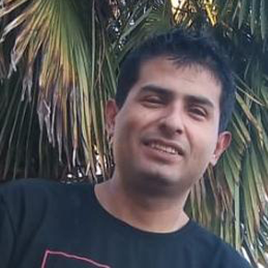
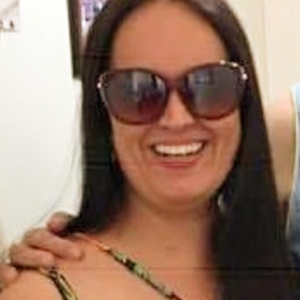

Sobre nós
Nessa página você pode encontrar informações do perfil das pessoas envolvidas na construção desse projeto.
Fabio Meireles da Silva
Deficiência física no braço esquerdo em decorrência de uma Síndrome de Parsonage Turner. Biólogo de formação e cursando Análise e Desenvolvimento de Sistemas. Atualmente atua na área bancária como Assistente Operacional em São Paulo/SP Conhecimento básico em pacote office, lógica de programação, HTML5, CSS, GIT e JAVA.
Jefferson Soares
Deficiênte visual total e está cursando análise e desenvolvimento de sistemas. Tem 26 anos e sua última experiência de trabalho foi na Faculdade Uninter no setor administrativo. Tem conhecimento Em lógica de programação, banco de dados, html, java e java scpript.
Lucimara Azambuja Alves
Deficiência visual, glaucoma congênito, cegueira total. Técnica em contabilidade e iniciou licenciatura em educação especial. Trabalha na Prefeitura de Novo Hamburgo como Assistente Administrativa à 6 anos. Tem experiência com o pacote office, ferramentas do Google e Windows básico.
Ruan Starley da Silva Muniz
Amputado de perna esquerda a nível transtibial há 6 anos. Tem 25 anos e atualmente está desempregado. Trabalhou desde os seus 14 anos no Grupo Coca - Cola passando pelas áreas de manutenção, produção e logística. Saiu da empresa este ano pois a mesma fechou a unidade na sua cidade. Experiência em sistema S.A.P, pacote office e informática.
Silvana Santos
Deficiente física no membro superior direito sequela de poliomielite. Formação ADM. no momento atua na área bancária como analista. Experiência com carta de crédito de exportação, cobrança de exportação e importação, Custódia, garantias internacionais recebidas, contratos de carta de crédito de importação e Standby (emitidas) etc. Informática intermediário.